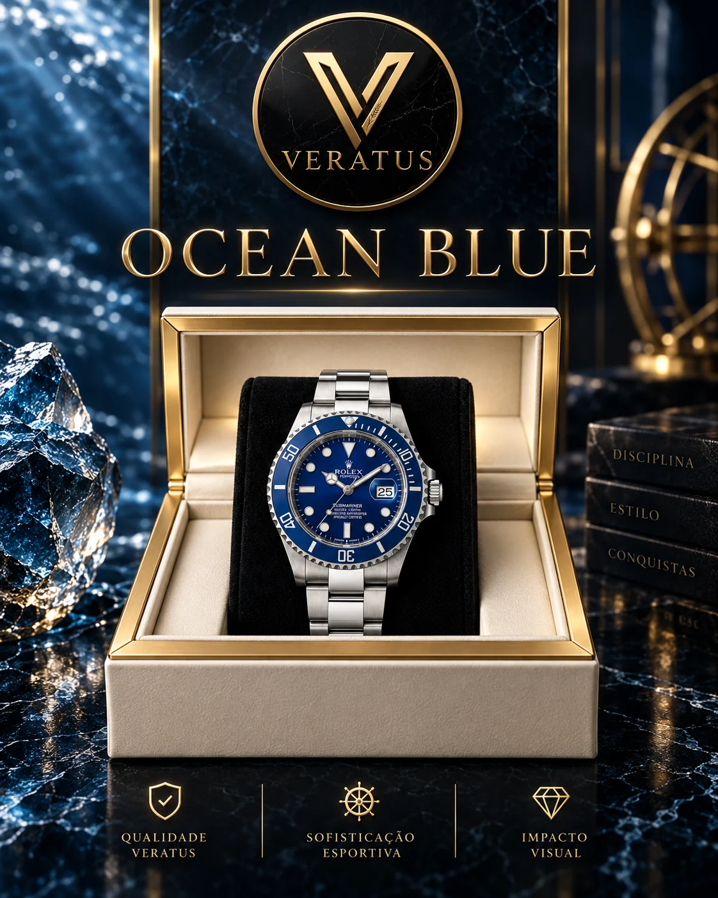
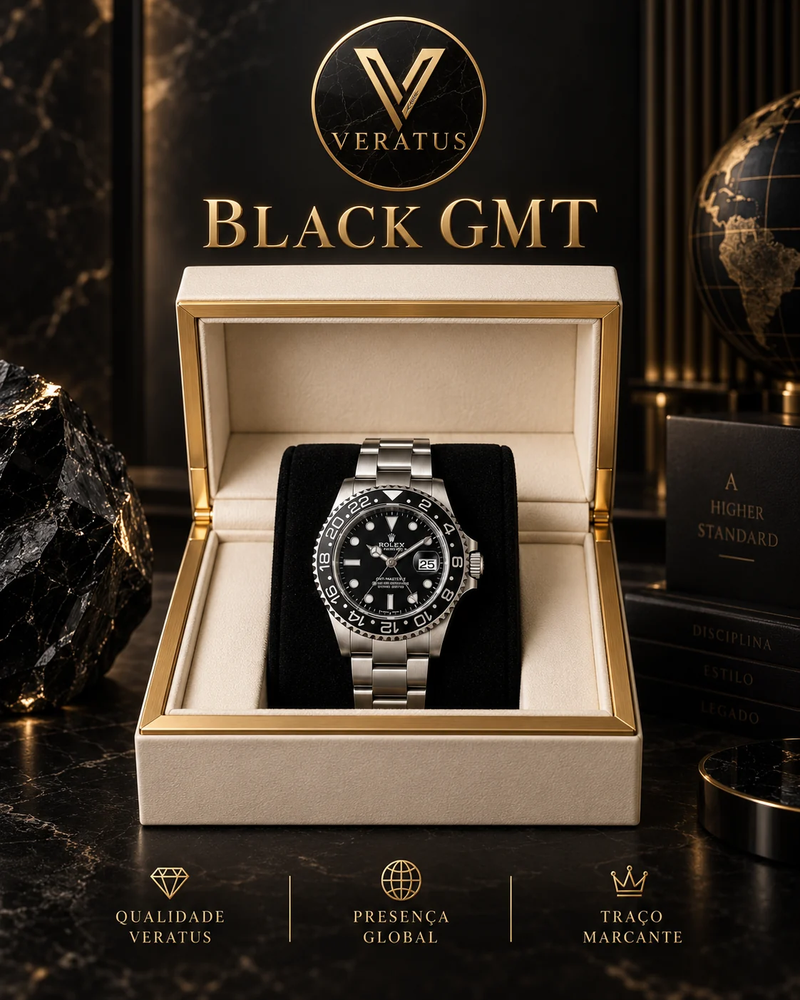
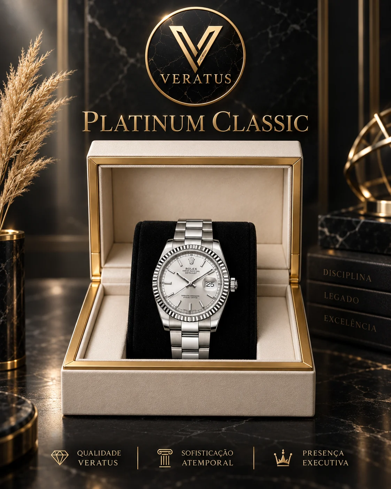
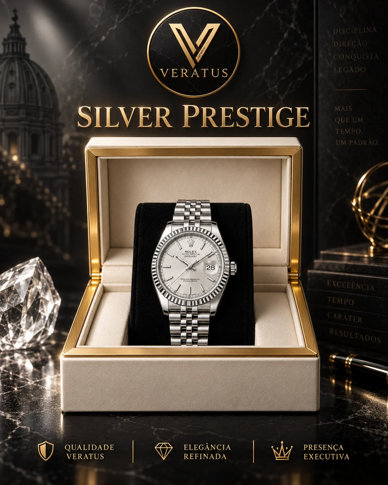
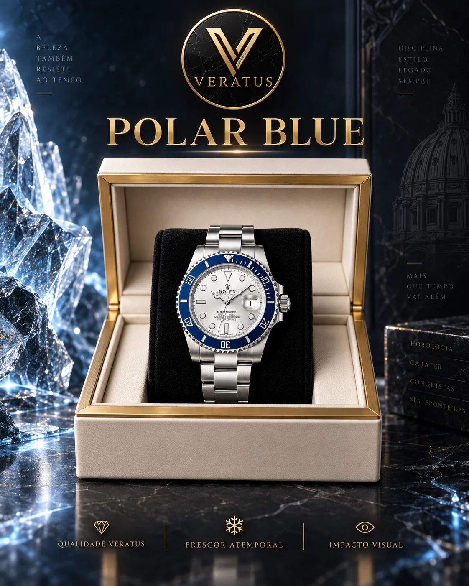
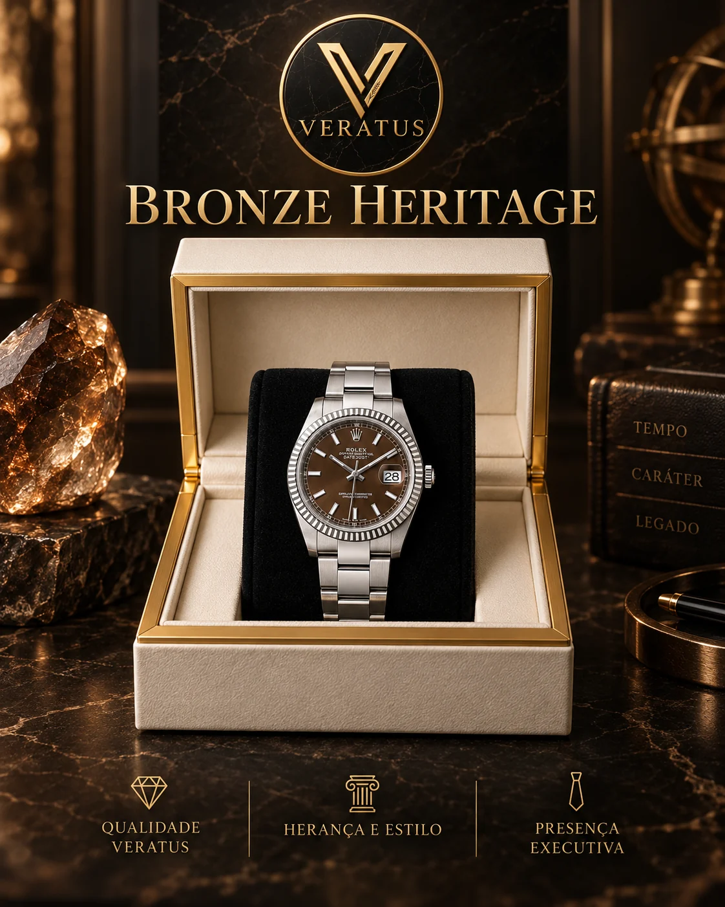

Silver / Precisão visual
O silêncio
também marca
presença.
Uma composição clara para quem prefere equilíbrio e leitura direta.
Mostrador sincronizado
O relógio à sua frente acompanha a hora do seu dispositivo. Escolha uma presença e veja toda a experiência responder.
HORA LOCAL / BRASIL
01 / A ideia
Uma experiência construída para comparar estilos com calma, sentir cada atmosfera e chegar à conversa já sabendo qual modelo chamou sua atenção.
02 / Três atmosferas
01 — 03Silver / Precisão visual
Uma composição clara para quem prefere equilíbrio e leitura direta.
Navy Gold / Contraste
Azul e dourado ocupam a cena com uma presença definida.
Emerald / Personalidade
O verde transforma a composição e assume o protagonismo.
03 / Explore por toque
Toque nos pontos para observar como mostrador, aro e pulseira alteram a presença visual do modelo selecionado.
04 / Coleção completa
Filtre por estilo. Arraste para explorar. Abra um modelo para entrar em sua composição.
Clássico / Versátil

02Esportivo / Versátil

03Esportivo / Marcante
Marcante / Esportivo

05Clássico / Versátil
Marcante

07Clássico

08Esportivo / Versátil

09Clássico / Marcante
05 / Da escolha à conversa
Explore cores, composições e estilos no seu próprio ritmo.
A seleção acompanha você durante toda a navegação.
A conversa é aberta com o modelo escolhido e a origem da visita.
Seu tempo já escolheu
Consulte disponibilidade, valores e condições atuais do modelo Silver.
Conversar com a Veratus